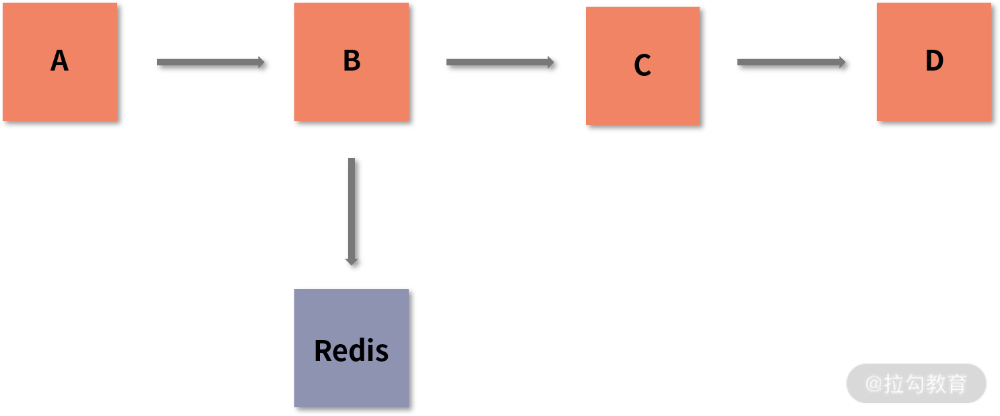
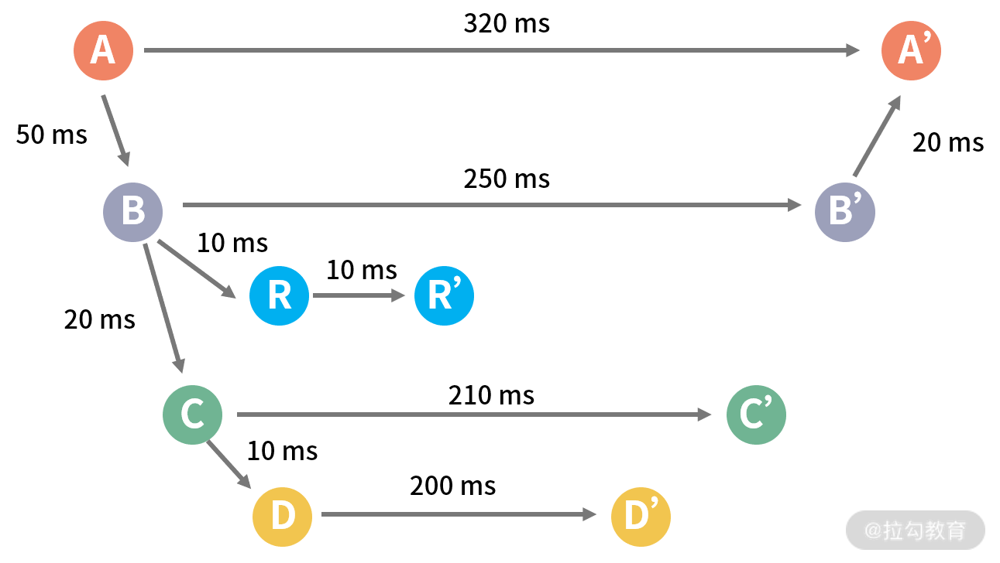
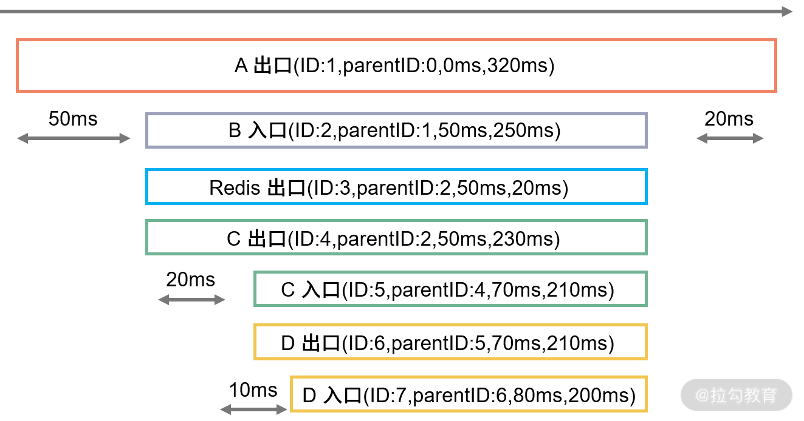

- 00 分布式链路追踪实战.md.html
- 01 数据观测：数据追踪的基石从哪里来？.md.html
- 02 系统日志：何以成为保障稳定性的关键？.md.html
- 03 日志编写：怎样才能编写“可观测”的系统日志？.md.html
- 04 统计指标：“五个九”对系统稳定的真正意义.md.html
- 05 监控指标：如何通过分析数据快速定位系统隐患？（上）.md.html
- 06 监控指标：如何通过分析数据快速定位系统隐患？（下）.md.html
- 07 指标编写：如何编写出更加了解系统的指标？.md.html
- 08 链路监控：为什么对于系统而言必不可少？.md.html
- 09 性能剖析：如何补足分布式追踪短板？.md.html
- 10 链路分析：除了观测链路，还能做什么？.md.html
- 11 黑白盒监控：系统功能与结构稳定的根基.md.html
- 12 系统告警：快速感知业务隐藏问题.md.html
- 13 告警质量：如何更好地创建告警规则和质量？.md.html
- 14 告警处理：怎样才能更好地解决问题？.md.html
- 15 日志收集：ELK 如何更高效地收集日志？.md.html
- 16 指标体系：Prometheus 如何更完美地显示指标体系？.md.html
- 17 链路追踪：Zipkin 如何进行分布式追踪？.md.html
- 18 观测分析：SkyWalking 如何把观测和分析结合起来？.md.html
- 19 云端观测：ARMS 如何进行云观测？.md.html
- 20 运维集成：内部的 OSS 系统如何与观测相结合？.md.html
- 21 结束语 未来的监控是什么样子？.md.html
08 链路监控：为什么对于系统而言必不可少？
在上一节课，我带你了解了怎样通过自定义指标来观测你的系统。在本课时，我会向你介绍日志、指标之外，可观测性中另一个重要的环节：链路追踪。希望你在学完本课时后，对可观测性的组成有一个完整的概念。
什么是链路追踪
首先，我来带你了解一下什么是链路追踪？不知道你是否还记得这张图：

服务之间的依赖
我在“01 课时 | 数据观测：数据追踪的基石从哪里来？”中介绍了数据的来源，数据来源分为很多层，我们可以把这些层代入到这张图中。
- A 代表端上访问。比如网站发起了一个 Ajax 的请求，以拉勾教育为例，在课程详情页中获取课程信息就是一个 Ajax 异步数据获取请求。
- B 可以理解为应用层，比如 Tomcat。应用层接受了从 A 过来的请求信息，进行最简单的，类似判断用户身份信息的操作。从图中可以看到，B 操作了 Redis，假如我们在做 Session 共享，此时就可以把 Redis 作为存储方案。
- C 同样可以理解为应用层。就目前微服务化的基础架构来讲，我们一般也会将接口层和业务逻辑层分开，之间通过 RPC 的方式通信。这样的好处在于耦合度降低，接口层只需要专注和各种端上的交互，业务逻辑层只需要专注业务处理，无须关心上层是哪里调用过来的，这也可以很好地进行代码复用。以拉勾教育为例，图中的这一部分就可以理解为 B 通过 Dubbo 框架，来调用业务逻辑层获取课程信息数据。
- D 为数据库层。我们的数据基本都是采用数据库的方式存储的，图中的 D 就可以理解为通过 ID 获取课程的详细数据后返回。
通过这样的一张图，你可以清晰地了解一个请求完整的执行链路：从端上开始，到应用层后，通过各种组件的访问最终获取到数据。当然，这里只是一个简单的示例，我相信你的业务会比这个更复杂，但是它们的原理都是相通的。下面，我会对这一流程中的执行流程进行细化讲解。
调用流程
我用流程图来展现整体的执行流程，为了方便说明，我在图中标注了每一步消耗的时间，这个时间不是固定的，可能会依据场景和性能的不同而变化。在这张图中，我标识了请求开始到结束的整个流程，从左到右代表时间，字母和对应的“字母'”代表每个阶段的开始和结束。

调用流程图
下面，我会对图中的流程做一个简单的介绍：
- A 到 A' 代表请求从开始到结束的整体时间。
- A 发起请求到 B 接收到数据总共花费了 50ms，B 在计算时总共花费了 250ms，最终 B 将数据聚合返回给 A，这个过程花费了 20ms。因为这一步会涉及内外网的数据传输，所以会有一定的时间损耗。当然，在真实环境中的耗时会比这个低，这里只是举例说明。
- B 在接受请求后，分别去请求了 Redis 和 C 应用（Redis 在这里我用了 R 来代表），在请求时又分别花费了 10ms 和 20ms。Redis 和 C 应用在接收请求后，又分别使用了 10ms 和 210ms 来处理业务逻辑并返回数据。
- C 和上面一样，通过 10ms 来进行 D 的调用和处理，这个流程总共花费了 210ms。
从这张图中我们可以清楚地看到每一个应用和别的应用进行交互时的总耗时和自身耗时，进而了解它们之间通信和自身处理的耗时、流程和数据走向。但是这还存在着一些问题，就是我们怎样将这个图以数字化的形式展现出来，然后通过这种形式去定位问题？这个问题的解决方式就是“链路图”。
在介绍链路图之前，我要先来带你了解一下 Span，看看 Span 中包含的内容，好让你在理解链路图的时候更为轻松。
Span 的构成
Span就代表我在流程图中的字母和对应的“字母'”，他就代表了一个操作行为。Span 一般会由以下几个部分构成。
- 开始时间：代表这个操作是从什么时候开始的一个时间戳。
- 结束时间：和开始时间类似，它也是时间戳，代表操作执行完成的时间。通过开始时间和结束时间这两个时间戳，我们可以计算出这个操作的耗时时长。
- ID：主键。可以理解为在一个链路中，这个 ID 是唯一的。链路中的主键和我们在 MySQL 中的主键是一个概念。
- 父级 ID：一个 Span 中有自己的 ID 和父级 ID，可以理解为是一个树形的概念，父级 ID 是树干，ID 则是枝叶，通过树状图可以更方便地绘制图片和查询操作之间的依赖关系。
- 操作名称：用于指明你操作的内容名称，你可以快速了解是在进行什么操作。比如 Dubbo 这类 RPC 调用就可以使用方法签名，HTTP 访问就可以使用访问路径。名称也会用在一些其他的地方，例如聚合数据时，就可以将同一名称的数据聚合在一起。
- 操作类型：用于指定当前操作的类型，一般可以分为下面 3 类，它们基本囊括了我们的各种操作类型：
- 入口：代表别的请求到达你的系统时，就可以认为是入口操作。比如 Tomcat 接收到外部的 HTTP 接口请求。
- 出口：代表你的系统向别的系统发出了请求，通常是获取数据等通信操作。比如你通过 RPC 调用了其他系统，或者你向数据库发起了一次查询，都可以认为是出口操作。
- 本地：本地进行了某些操作，不涉及任何需要远程通信的组件，是业务系统调用的本地处理。比如你通过 EhCache 查询了本地缓存，或是本地进行了一次文件操作。
Span 之间关系
介绍了 Span 的内容后，我再来讲一下 Span 之间的依赖关系。从上面的介绍中，我们知道，链路在大多数的情况下会是一个树形结构。因此，我们在日常开发过程中，一个入口下面一般会有多个出口操作，比如我们通过 Kafka 发送消息、Redis 写入缓存、MySQL 查询数据。那么会不会有多个父节点的情况呢？
其实是有的。比如 Kafka 在消费的时候，可能会一次性消费一个 Topic 下面的多个链路信息，由此就可以将这个消费的链路理解为是一个“森林”。因为它会同时拥有多个父节点，并且每个父节点对应着具体的某个链路。
链路图
在讲解了 Span 的基本属性信息后，相信你对 Span 的作用也有了一个基本的认识。接下来我们再来看一下链路图：

链路图
在图中，每一行的长方形都可以理解为是一个操作的基本单元，在链路中也叫作Span（跨度）。链路由一个 Span 的集合构成。其中 Span 中包含 4 个信息，在长方形中，从左到右依次是：SpanID、父级 SpanID、当前开始时间（从 0 开始）和当前 Span 的耗时。下面，我对图中所表示的流程做了一个简单的介绍：
- 假设第一行的 Span 代表在网页中发出请求，可以认定为是出口请求，所以 A 的 Span 是出口类型的操作。SpanID 从 1 开始，没有父级 Span， 所以 parentID 认定为 0，并且开始时间是 0ms，当前 Span 的总共耗时是 320ms。在真实的场景中，当前开始时间是系统当前的时间戳，耗时也会根据场景和性能的不同而变化，这里使用 0ms 和 320ms 只是为了说明。
- 在第二行中，B 接收到 A 传递来的请求，所以是入口类型的操作。由于网络损耗导致 B 在 50ms 时才接收到请求，所以当前操作的开始时间是 50ms。并且根据层级可以得知 B 是 A 的子节点，所以 B 的父级 ID 对应 A 的 ID，因此 B 的 parentID 是 1，并且 ID 是自增的，所以 B 的 ID 为 2。
- 在第三行中，因为 B 进行了一次 Redis 操作，而 Redis 需要连接别的数据源，所以这里的 Span 算为出口类型的操作。因为网络耗时和 Redis 处理各花了 10ms，所以总共的耗时是 20ms。当然，如果再细一步的话，同样可以在当前行的下面画出 Redis 中的入口 Span，这个取决于链路追踪系统的能力，是否可以细粒度到 Redis 组件内部。
- 第四行则代表 B 向 C 应用发出了一个请求，所以同样是出口操作类型。这里需要注意的是，第三行和第四行的父级 SpanID 是一致的，这代表了它们的父级应用是一样的，都是 B 入口下面的操作。又由于它们开始的时间是相同的，所以代表它们分别启动了两个线程来进行操作。
为什么不是同步执行的呢？如果是同步执行，那么这张图就需要改变为先完成了 Redis 操作，在 Redis 结束后，才会开始第四行的操作。
图中后面的内容和前面我所讲的类似，就不再赘述了。
链路追踪与 Dapper
如果对链路追踪了解，那你一定听过 Dapper 这篇文章。其实 Dapper 和我上面讲到的内容十分相似，只不过我认为这样的讲解更为直观，所以并没有套用 Dapper 的内容。
目前，无论是开源还是商业化的链路追踪系统，基本都有借鉴了 Dapper。如果你对细节感兴趣，可以通过以下地址了解：
https://github.com/bigbully/Dapper-translation
链路追踪的作用
通过对链路追踪基本概念和流程的讲解，相信你对链路追踪整体的概念有了一个整体的认识。链路追踪是可观测性中不可缺少的一环，因为它会监控我们服务运行中的每一步。我们可以通过链路追踪，快速了解程序真实的执行状态。那么，链路追踪具体有哪些作用呢？
- 链路查询：就算你接手了一个全新的项目，对这个项目一无所知，你也可以通过某个入口查看链路，快速了解当前程序的运行情况，并且可以通过很直观的图来展现：到底是哪里比较耗时，出现错误时是哪个操作导致的，等等。
- 性能分析：通过聚合链路中的数据，我们可以结合操作名称，快速得知系统的运行容量、耗时情况等。
- 拓扑图：通过对链路信息的聚合分析，我们可以分析得到的数据，形成拓扑图。拓扑图可以使你直观地了解整个系统的构成。
- 依赖关系：同样是链路的聚合分析，你还可以了解到操作之间的依赖关系，从而快速感知操作之间的重要等级。如果将依赖关系与限流熔断技术相结合，可以帮助更快地构建一个企业级的链路保护措施。
- 跨应用/语言：像我上面所说的每个内容，它们都是不限制语言的，每个语言都有它自己的实现。在一个大型的企业中，几乎不可能保证所有的系统都使用同样的语言，利用链路追踪不限语言的特点，我们可以将不同语言的代码串联到一起。
采样率
我相信你一定有过这样的疑问：监控这么大的数据量，岂不是会很消耗系统资源？
是的。所以现在已有的大量的链路追踪中，都会存在采样率的设定，其作用就是只采集一部分的链路信息，从而提升程序性能。在真正的环境中，没有必要采集 100%的链路信息，因为很多时候，大量的链路信息是相同的，可能需要你关注的只是其中相对耗时较高或者出错次数较多的。当然，有些时候也会为了防止漏抓错误而进行全量的链路追踪。是否需要进行全面的链路追踪，就看你在观察成本和性能中如何权衡了。
结语
相信通过这篇文章，你已经对链路追踪有了一个整体的了解。你觉得链路追踪中还有哪些作用是我没有提到的？你在监测链路时又遇到过哪些有趣的事呢？欢迎你在留言区分享你的见解和你的故事。
下一节，我会带你认识链路追踪有什么短板，又怎样去解决它们。